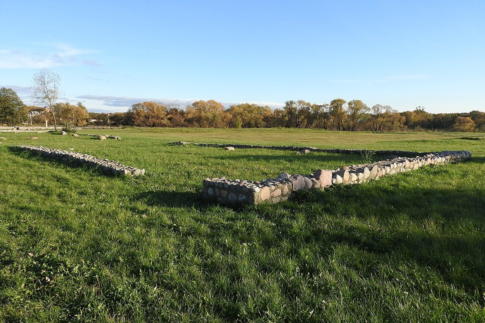
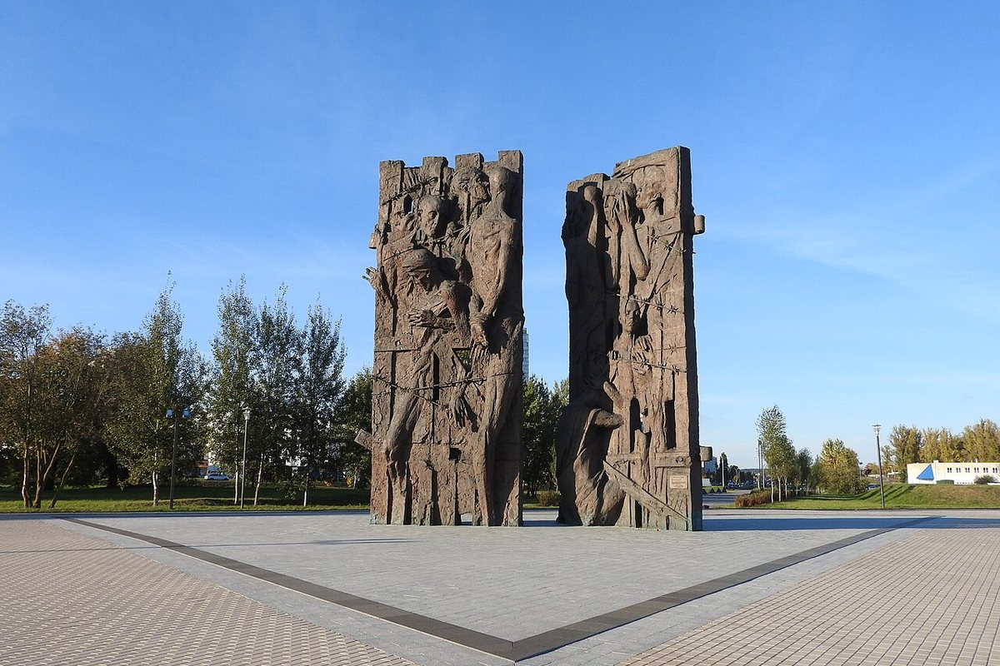
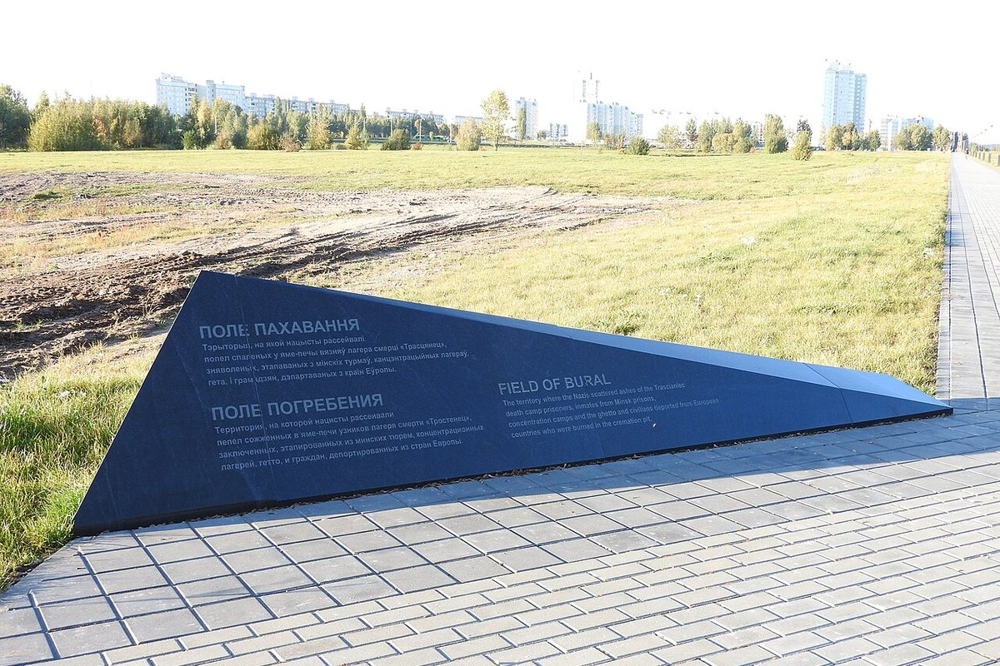

Лагер смерці пад Мінскам, дзе з 1942 па 1944 год былі забіты каля 206 500 чалавек. Мемарыяльны комплекс адкрыты ў 2015 годзе.
Малы Трасцянец пад Мінскам — найбуйнейшы лагер смерці на акупаванай тэрыторыі СССР. Ён дзейнічаў з вясны 1942 да лета 1944 года.
Тут знішчалі мірных жыхароў, савецкіх ваеннапалонных, яўрэяў з Беларусі, Аўстрыі, Германіі і Чэхіі, партызан і падпольшчыкаў. Па ацэнцы Надзвычайнай дзяржаўнай камісіі 1944 года, загінулі каля 206 500 чалавек.
У 2015 годзе на гістарычным месцы адкрылі мемарыяльны комплекс. Цэнтральная кампазіцыя — дзесяціметровыя «Вараты памяці» скульптара Канстанціна Касцючэнкі; побач знаходзіцца манумент «Масіў імёнаў».
Мемарыял размешчаны на паўднёва-ўсходняй ускраіне Мінска. Гэта месца памяці еўрапейскага значэння, куды прыязджаюць нашчадкі ахвяр з розных краін.


